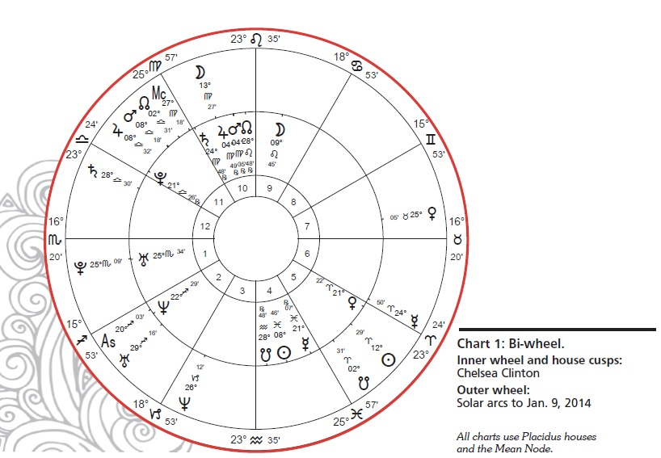
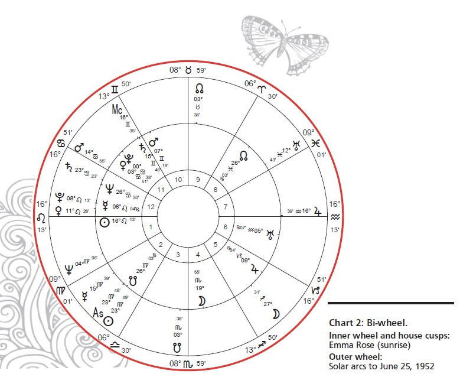
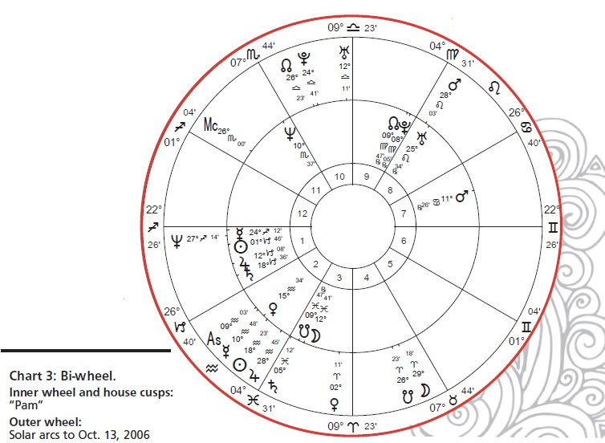
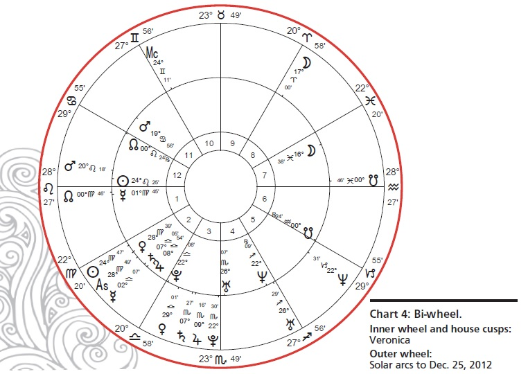

The Astrology of Pregnancy
View pdf version of the file
by Kathy Rose
What do you say to a woman
who asks you to look at her
horoscope to see if a pregnancy
is in her future? Often stressed
and anxious, she inquires emotionally,
“Will I have a baby? And if so, when?”
Naturally, as astrologers, we want to be
able to answer these questions. We are motivated
to identify if and when a pregnancy
may occur, as suggested by reliable planetary
cycles.
The astrology patterns present in a
mother’s chart for the nine-month period of
her pregnancy are both fascinating and complex.
However, the same aspects in a woman’s
chart that suggest pregnancy could also
point to many other things. We can’t know
for sure when a cycle will set the stage for a
new life coming forth or, instead, manifest as
personal expansion in another area.
It would be nice and neat if there were
a magic formula (astrologically speaking)
that would allow us to be able to predict
pregnancy. But this just isn’t how astrology
works — at least, not in modern times when
we have more free will, more choice in this
regard.
However intriguing it might be to identify
the planetary indicators that could suggest
pregnancy, I think it’s essential that we
approach this subject with both wisdom and
caution. As astrologers, we bear a responsibility
to be careful with our words and to be
respectful of the possibility that, when certain
thoughts are planted in a person’s mind, they
can manifest. Stress, fear, worry, and doubt
have such a strong effect on a woman’s hormonal
system that we certainly don’t want
to inadvertently plant a negative seed by not being mindful of how we address this
delicate topic.
The fact, though, is that women frequently
do come to an astrologer with
questions about conception and pregnancy
— wanting to know if and when
a child may come into their life. Often,
by the time they seek the counsel of an
astrologer, they’re already feeling anxiety
or pressure about this subject. This
is normal, and we need to know how to
handle this situation.
Free Will and Choice
Before we start to look for potential
signs of an upcoming pregnancy,
we must first make sure that we understand
the reality of the person seeking
answers. We need to remember that reliable
birth control is readily available in
our culture, and women generally have
a great deal of choice with their reproductive
systems. While the ideal “textbook”
lineup of aspects for fertility may
be present in a client’s chart during her
childbearing years, she may choose not
to go in that direction.
That’s why I always ask one or
more key questions: “Are you thinking
of pregnancy? Are you in a serious relationship?
Are you taking birth control?
Do you want a child?” In other words,
is a pregnancy a reasonable possibility,
given the client’s reality?
I think it’s important to remember
that planets don’t do things — people
do. Choice enters into the picture. The
astrologer who makes a dramatic and
declarative pronouncement, such as,
“You will be pregnant in July!” seems to
me to be acting out of ego, rather than
truly being of service to the client. Free
will needs to be honored.
Recently I saw a new client who had
been told by a psychic that she would
absolutely, positively be pregnant in February
2014. The client mentioned that
this declaration triggered a sense of fate
— a feeling that her pregnancy was out
of her control — as if it were ordained to
happen. Interestingly, it also intensified
her inner anxiety: She wondered if she
was doing everything “right” in order to
support the prediction. She actually worried
about missing the most fertile days
for engaging in sex, due to scheduling
issues with her husband’s work. A very
real fear arose because she focused on
not messing up the special time that was
so firmly forecast.
February arrived and she was not
pregnant … and still isn’t. She told me
she felt that she had failed, that she had
missed the window opened by the Universe.
She said she would rather not
have had the prediction issued.
This client had allowed someone
else to unduly influence her reality,
and this ignited a host of very stressful
feelings. The internal fear and anxiety
about fulfilling the prediction may
well have put her hormonal system into
overdrive, which could have contributed
to her not becoming pregnant. The
body–mind connection is so powerful!
Many astrologers simply won’t issue
this type of exact or absolute prediction.
However, in my 30 years of consulting
with clients, I have heard plenty of stories
of damaging proclamations such as
this — stories that underline the need for
astrologers to be mindful and sensitive.
In this article, I’ll explore the aspects
and references that suggest a potential
pregnancy, and I’ll present several
case studies that help us to understand
patterns. As you’ll see, the astrology of
pregnancy is a profound and fascinating
subject, one that calls for a clear awareness
that helps us to better serve our clients.
Before we start to look
for potential signs of an
upcoming pregnancy, we
must first make sure that we
understand the reality of the
person seeking answers.
The Trigger
There is always a good backstory
behind each article I write. Invariably,
an event or a trigger launches my interest
and leads to research, analysis, and
deep learning. This article started with
my preparation to speak at the annual
Student Seminar for the Noel Tyl Master
Certification Course, January 2014, in
Newark, New Jersey. Noel has given me
the opportunity to be his Teaching Associate,
and I was presenting a section on
the topic of planets moving to the Aries
Point (AP) by solar arc.1
As I was preparing for my lecture, I
let my intuitive mind guide me to celebrity
horoscopes that had planets at the
AP by solar arc so that I could use them
as examples. When I saw Chelsea Clinton’s
name in my files, I instantly had
the special inner nudge that signals me
to check out her chart.
Sure enough, when I examined
young Ms. Clinton’s horoscope (see
Chart 1, page 34), I saw that solar arc
(SA) Uranus was at 29°16’ Sagittarius in
January 2014. Uranus would solar arc
to the Aries Point (0° cardinal) later in
the year, in October. What I found interesting
is that, in her natal chart, Uranus
rules the 4th house, and when a
planet that rules an angle in the natal
chart moves by solar arc to the AP, there
seems to be an extra power to this kind
of “bloom.” So, I asked myself, “What
would be happening in her life with
4th-house matters, i.e., family issues?”
Looking deeper in her horoscope,
I noticed that she also had SA Pluto =
(natal) Uranus (with solar arc notation,
we delete the aspect and insert an equal
sign) and SA Venus = Uranus in June
2014. It’s easy to see a repeating message
about the 4th house being highly
activated! I immediately started to wonder
about pregnancy.
In addition to all the activity with
Uranus in Chelsea Clinton’s chart, there
was also transiting Saturn conjunct her
Ascendant from November 2013 to
July 2014. The conjunction of Saturn
with the Ascendant is highly significant
and suggests the start of a new 29-year
cycle related to identity and sense of
self. There is almost always a major shift
in how we see ourselves with this cycle,
and we know that when a woman has
her first baby, there is a powerful change
in identity!
One more measurement sealed
the deal for me: I noticed that transiting
Jupiter would conjoin her Leo Moon
in August 2014, and then square her
Ascendant from October 2014 to June
2015.
I felt that all this activity was a natural
signal for potential family expansion
and that chances were good that
we might hear an announcement of her
pregnancy sometime in 2014. I mentioned
this to the Tyl students in January,
and then on March 13, I also posted my prediction on Noel’s public Discussion
Forum in the section “Astrology of
the Famous and Well Known.”2
On April 17, just one month after
my public post, we received the happy
news that Chelsea Clinton was indeed
pregnant, and she subsequently gave
birth to a daughter on September 26,
2014 — just six days before SA Uranus
moved precisely to 0°00’ Capricorn!
The catalysts for this article and
the accompanying research were the
many personal e-mails I received in
response to my post on the Tyl forum.
I began to get requests from astrologers
who wanted to better understand
the cycles and aspects that may suggest
pregnancy. They were keen to have discussion
that went beyond the type of
thinking that “a transit to a planet in the
5th house will bring a pregnancy.” They
were intrigued by the measurements I
presented, which not only suggested a
pregnancy, but also resulted in one.
I, too, wanted to delve more deeply
into the topic, so I began
to scour my files for
mothers and
their children. Thus began the process
of data collection for the cycles that
were going on when the women were
carrying babies in their bellies.

Research Parameters
I gathered data for 56 births from
36 mothers. In all cases except one, the
birth time is verified by the birth certificate.
I have personally worked with
most of the mothers for many years in
astrology consultations, and am familiar
with their life stories.
I felt that it was necessary to keep
the measurements simple and basic. My
belief is that the important, powerful life
changes are usually obvious and easy
to see in the horoscope, if you know
what to look for. My friend and mentor
Noel Tyl calls them big bells — they
vibrate loudly and attract our attention.
So, I looked only for transits from
Jupiter, Saturn, Uranus, Neptune, and
Pluto, and I included just the aspects of
conjunctions, squares, and oppositions
to the natal planets, lunar nodes, and
angles in the horoscope.
I also looked for solar arcs, but only
the conjunctions, squares,
and oppositions. I
included solar
arcs to the
nodal axis and also solar arcs from the
nodes. Noel Tyl has advanced the idea
that the nodes can be a strong symbol
of female energy. Planets in the natal
chart that are configured with the nodal
axis often suggest the relationship with
the mother or significant female figure,
so naturally I extended that to include
motherhood. It made sense to me that,
during pregnancy, we might see transits
or solar arcs involving the nodal axis.
You might wonder why I didn’t
include the harmonious trine or the
flowing sextile aspects. My feeling is that
these easy measurements don’t propel
us forward with enough significant
momentum or a strong enough push
to result in a major life change. I have
always found that the aspects that have
tension produce the biggest growth and
forward movement.
I used charts of women who had
birth times verified by their birth certificate,
with only one exception: the chart of
my mother-in-law. Her story of pregnancy
is very interesting, and I will use her chart
as an example to illustrate my point.
Most of the women included in this
research had more than one child, and
a few had as many as four. I looked
at the transits and solar arcs that were
going on during the nine-month period
of their pregnancies. This is a simple
thing to do: You take the date when
the child was born and count backward
nine months, and then you scan that
time frame for the transits and solar arcs
in the mother’s chart.
My focus was not to find the exact
time of conception, but rather to look at
the entire period of pregnancy. I watched
for the outer-planet transits that made
an exact contact during that nine-month
period. I did the same with solar arcs:
I considered only the arcs that came to
perfection while the woman was carrying
the baby, or at the time of birth.
I started the research for this article
by asking myself the question: “What
patterns would you anticipate seeing
in a woman’s horoscope at the time of
pregnancy?” I thought I’d see frequent
traditional fertility solar arcs involving
the Sun and Venus, or Venus and the
Ascendant, and so on. I also assumed
that there would be a predominant pattern
of transits or solar arcs to the ruler
of the 5th house or to planets in the 5th.
My belief is that the important, powerful life
changes are usually obvious
and easy to see in the
horoscope, if you know
what to look for.
However, this didn’t show up with as
much regularity as I expected.
What I anticipated seeing didn’t
prove to be the case. I was absolutely
fascinated!
Giving Birth Is a Big Life Event
I considered that I may have been
thinking in terms that were too narrow
regarding the astrology of pregnancy.
Conceiving, growing a new life, and
having a baby represent a huge lifestyle
change — it is a significant and powerful
life-altering event when a child is
brought into the world.
Most women these days are
engaged in careers and continue to
work even after having a baby. A hundred
years ago — maybe even 50 years
ago — this was not common. In the
early 20th century, most women viewed
getting married, having babies, and raising
a family as their primary life purpose
and career.
The majority of charts I used for
research were those of women born in
the 1940s or ’50s — the point in time
when their childbearing years coincided
with the more widespread acceptance
of women in the workforce. The database
for this article contains a few charts
of mothers who were born in the early
1900s and also several who were born
in the late 1980s and early ’90s.
I think it’s important to reiterate
that, early in the 20th century, becoming
a mother was linked to the sense of
achieving one’s life purpose. Unless one
was in the über-wealthy upper class and
could afford a full-time nanny, women
stayed home, and their entire focus was
on raising their children and managing
the household. Perhaps if we exclusively
studied horoscopes for births in
the 1800s and early 1900s, we may see
a different pattern, compared to what I
saw with contemporary births.
In modern times, women focus
their ambition and desire for achievement
not just on having a family, but
also on a career. Having a baby is certainly
significant, but — let’s be real —
nowadays when a woman who works
full time has a baby, her life assumes a
high degree of complexity as she juggles
a career and childcare issues. This
also adds responsibility to the father’s
lifestyle, but the stress felt by the man is
more often one of financial pressure to
provide security.
We still hear many stories suggesting
that, despite both parents working
full time, it’s usually the woman who
does the majority of cleaning, cooking,
and household caretaking. I know there
are exceptions, but it seems that career
women are now taking on two full-time
jobs when they have a baby.
So, how would all this show up
in the horoscope? Isn’t it reasonable
that the cycles that are present in the
chart of a woman who becomes pregnant
would symbolize a big life change
instead of just fertility or 5th-house
references?
The Data
As I analyzed the charts, I found it
very interesting that there were consistently
three to five different big bell transits
or solar arcs going on simultaneously
during the pregnancy. In many cases,
there were even more than five. This is
likely the most noteworthy piece of information
to consider. We should probably
change the way we are viewing this,
moving from “What specific transits or
solar arcs suggest a birth?” to “How
many cycles are occurring at once when
a woman becomes pregnant?” With this
approach, I began to expect to see three
or more major cycles going on simultaneously
in the chart of a pregnant mother,
as I continued to collect the data.
Following is a breakdown of aspects
for the 56 births I analyzed (from 36
mothers with accurate birth data).
1. Angular Activity
The most frequent cycle I saw was a
transit from an outer planet — or a solar
arc — to an angle, with the Ascendant
and Descendant having the most activity.
Twenty-six charts out of 56 (46%)
received direct hits to these angles. Four
of those charts had more than one transit
or solar arc affecting the Asc./Desc. at
the same time. Jupiter and Saturn cycles
hitting the 1st/7th axis were most common.
Interestingly, Neptune followed a
close second.
The direct hit to an angle is certainly
significant, and we should keep
this in mind when we are pondering
the question of a potential pregnancy
(major life event). Angles are the most
dynamic points in the horoscope, so we
can expect powerful movement in life
when one of these areas is contacted.
The most frequent cycle
I saw was an outer-planet
transit or a solar arc to an
angle, with the Ascendant
and Descendant having
the most activity.
Just as potent for change and
growth is the planetary ruler of an angle
being activated by a transit or solar arc.
Since Mercury and Venus each rule
two signs, there are more opportunities
for an angle ruler to be triggered, so I
didn’t tally up the number of charts that
reflected this. But I must mention that
the angles were the most active areas
by far, receiving the most hits in the 56
births I studied.
Angles and their rulers must be considered
as power generators for major
life changes when activated by transits
and solar arcs — and this activation
was consistently present in the charts of
pregnant women in my research.
2. The Sun
Twenty-two out of 56 pregnancies
(39%) had exact contact from a solar arc or an outer-planet transit to the natal
Sun, with eight of those charts showing
multiple transits or solar arcs to the Sun
going on at the same time. Again, as with
the angles, Jupiter and Saturn cycles to
the Sun were most common, with Neptune
following a very close second.
The Sun is the symbol for our core
sense of self, our life purpose and direction.
Strong transits and solar arcs to
the Sun offer us a period to consider a
course correction in life, to build a new
feeling of confidence, or to strengthen
our identity. Often when the Sun is activated
by a cycle, we re-evaluate who we
are and where we are going.
It makes sense that cycles to the
natal Sun would be a consistent pattern
for pregnant women. When a woman
carries a pregnancy to term, there is
often a change in how she sees herself.
I’ve had frequent conversations
with women who mention that, when
they become a mother, it’s very common
for them to refer to themselves as
“someone’s mom” instead
of using their own
name. The inner image shifts to mother
and protector of a child, rather than
the image of oneself as a separate
individual.
One note about Neptune transits
or solar arcs showing up frequently
both to the angles and to the Sun: At
first this really surprised me. I certainly
never anticipated Neptune as being a
factor in a pregnancy! However, when
we consider that there is enormous sacrifice
required when a woman becomes
a mother, isn’t that Neptune energy?
And there’s the issue of the temporary
change (loss) in individualized identity
that happens for women when they step
into the powerful role of guardianship
and protector of new life. Mothers tend
to put their children’s needs first; there
is often a selflessness that goes with the
job. Neptune frequently dissolves ego,
and this fits in with the bloom of motherhood.
Interesting!
A Miracle Birth:
Jupiter Hits the Sun
The only horoscope I included
that does not have a verified birth time
is that of my mother-in-law, Emma
Rose. (I use a sunrise chart when no
time is provided.)
Mrs. Rose very much wanted to
have a large family and began trying
to become pregnant in her early 20s,
right after she got married. Following
many years of focusing on getting pregnant
with no success, she finally went
to a doctor for help. She was told that
she was infertile, and was absolutely
crushed. However, as is occasionally the
case, Mrs. Rose was shocked, amazed,
and thrilled when, out of the blue, she
became pregnant at 39 years of age. In
the 1950s, that was considered very old
to have a first child. She always referred
to her son, my husband, as her “miracle
baby.”
I thought of her story when I started
this article, and knew that I had to check
out what was going on in her chart
during her pregnancy. (See Chart 2, at
left.) I anticipated seeing either a Venus
solar arc or a contact from Jupiter, simply
because that carries the “miracle”
energy. Amazingly, when she became
pregnant, it was during SA Jupiter =
Sun. She was also receiving a transit
from Jupiter in Aries to her natal Jupiter
and Venus in the fall of 1951, when she
discovered she was pregnant. Miracle
baby, indeed! The benefic rays of Jupiter
produced the reward.
One last note about this horoscope:
Mrs. Rose suffered from frequent
migraine headaches, but when
she became pregnant, they stopped
completely — probably due to the
hormonal changes. She mentioned to
me many times that, during the nine
months of pregnancy, she felt the best
she ever had in all her life. Again, we
see the benefic Jupiter solar arc shining
through!

I suspect that we’d see activity to
her angles, if we had her birth time.
She lived a long and fulfilling life, passing
away when she was 93. I felt that
chances would be good that, even without
a birth time, the aspects reflecting
the miracle pregnancy would be easy to
see — and they were.
The Moon is a natural symbol
for the mother energy,
and it’s normal to anticipate
that it might receive transits
or solar arcs when a woman
becomes pregnant.
3. The Moon
The Moon is a natural symbol for
the mother energy, and it’s normal to
anticipate that it might receive transits
or solar arcs when a woman becomes
pregnant. Twenty-one out of my 56
research horoscopes (37%) had examples
of the Moon being transited or contacted
by a solar arc, with 6 of those
21 having multiple cycles to the Moon
during pregnancy. Interestingly, contact
from Uranus to the Moon was strongest,
followed by Saturn, Pluto, Neptune, and
then Jupiter, in that order.
Personally, I had a powerful theme
of lunar involvement for both of my
pregnancies. Transiting Uranus was
square my Moon when I was pregnant
with my first baby, and with my second
child I had SA Pluto = Moon and transiting
Jupiter opposite my Moon happening
at the same time.
I also had SA Ascendant at 0° Cancer
(Aries Point, or AP) when I gave
birth to my first child. This is especially
significant because I never thought I
would want children. I have a very independent
warrior Moon in Aries. Having
my SA Ascendant hit the AP in Cancer,
a lunar-ruled sign — along with the Uranus
transit to my Moon — totally altered
my thinking, and I embraced motherhood
with a passion! My identity easily
flowed into the role of nurturing mother
and caretaker.
A Surprise Pregnancy:
Uranus Transit to the Moon
One of my long-term clients, “Pam”
(a pseudonym), was totally astonished
when she became pregnant with her
first child at age 45. She had an amazingly
easy pregnancy and gave birth to
a healthy son when she was just three
months shy of her 46th birthday. (See
Chart 3, below.)
When Pam became pregnant, she
was in a long-term serious relationship
but wasn’t married. The surprise
pregnancy pushed her and her partner
to wed immediately, and the cycles
going on in her chart at the time tell the
tale. We see the “surprise” by the many
cycles involving Uranus:
- Transiting (TR) Uranus conjunct
the Moon
- SA Uranus = Mars
(ruler of the 4th house)
- TR Saturn conjunct Uranus
(exact two months after the birth)
- SA Uranus = Jupiter (ruler of the
Ascendant)
- SA Midheaven = Uranus
The repeating pattern of contact
through transits and solar arcs in her
chart (both to Uranus and from Uranus)
suggests the sudden and unexpected
change that the news of pregnancy
brought into her life. With the Uranus–
Moon transit, plus the solar arc from
Uranus to the ruler of the Ascendant,
we see the powerful trigger to an angle,
which I mentioned earlier.
It’s fascinating that, in a consultation
Pam and I had in 2005, I mentioned to
her that there was a suggestion of marriage
or perhaps significant relationship
development in her chart in 2006. I saw
this with SA Venus = Sun, which was
exact in mid 2006. Because I never even
considered that pregnancy might occur
(given the fact that she was in her mid
40s), I naturally thought of marriage or
relationship issues instead. The marriage
did manifest, but it was triggered
by the fact that she became
pregnant!
We’ll explore the Venus energy
next.

4. Venus
As I stated earlier, I anticipated seeing
a predominance of Venus cycles in
examples of pregnancies because I associate
this planet with matters of women’s
fertility. From the sample charts I had,
37% were receiving a transit or solar arc
to natal Venus. Particularly interesting to
me was that there were 21 charts with
Venus being aspected; in 5 of the 21,
Venus ruled the 5th house (children),
and another 5 of the 21 had Venus ruling
the 4th (family).
Amazingly, it was Saturn transits
or solar arcs to Venus that were most
common (6 cases out of 21), followed
by Pluto (5 cases), Uranus (4 cases),
and Jupiter and Neptune (2 each). The
cycles I usually consider to be classic
potential pregnancy indicators are either
SA Venus = Ascendant or SA Ascendant
= Venus. There were 2 cases
of each of these cycles in
the sample.
Let me share with you a clear case
example that had Venus and Ascendant
activity: Veronica is a client of mine who
also became one of my astrology students.
Her studies, however, were interrupted
by her pregnancy. What’s truly
wonderful is that Veronica allowed the
class to use her chart in early 2012 as
a teaching tool for aspects that suggest
a possible pregnancy. Starting in late
2011, she began to feel the desire to be
a mother tugging at her, and in January
2012, she asked if we could explore this
topic in class.
Veronica has one of the very easyto-
spot signatures for heightened fertility.
(See Chart 4, below) When she
asked the question about possible pregnancy,
she had SA Ascendant at 27°55’
Virgo. I noticed that she would have SA
Asc. = Venus exact in the fall of 2012
(solar arc planets advance forward
5 minutes of arc per month). She also
had transiting Pluto square her natal
Jupiter–Saturn conjunction (Jupiter is
the ruler of the 5th house). I knew that,
in the summer of 2012, transiting Uranus
would join the mix in opposition
to natal Jupiter.
That’s all I needed to see to feel
confident in saying there was a strong
suggestion that it probably wouldn’t be
difficult for her to conceive sometime in
2012. I felt very comfortable saying this
because she had already announced
her intention. I never told her she would
conceive — I mentioned that there was
a suggestion of easy conception. I think
that putting it this way sends a better
message and doesn’t create pressure.
She became pregnant in the spring
of 2012, just before transiting Jupiter
was conjunct her Midheaven, and gave
birth in December.
I hope you spotted something in
Veronica’s horoscope suggesting a second
child: Did you see that SA Sun =
Venus (Midheaven ruler) in 2016, exact
in December 2016?
I want to mention something noteworthy
here: Veronica has the luxury
of living circumstances where she does
not need to work. She is viewing motherhood
as her career and a large part
of her life purpose, and she is a very
happy, dedicated, full-time mother. Perhaps
this is why one of the old “classic”
signatures — Venus combined with the
Ascendant or Sun — was present during
her first pregnancy (with the theme
showing up again for possibly another
baby in 2016).
5. Jupiter
There were 18 out of 56 pregnancies
in the research group (32%) where
natal Jupiter received a transit or solar
arc. In 8 of these 18 cases, Jupiter ruled
either the 4th or 5th house.
The Jupiter return was in play for 5
of the pregnancies — that was the most
active cycle. For the solar arcs, a few of
the planetary combinations that really
make sense with birth were present:
Ascendant = Jupiter, Sun = Jupiter,
and Moon = Jupiter.

6. Saturn
Twenty-one pregnancies (37.5%)
had a solar arc or transit to Saturn.
One of the most frequent questions
I received from astrologers, after
my posting on the Tyl forum, concerned
the Saturn transit conjunct Chelsea Clinton’s
Ascendant, and whether the Saturn
energy would make the pregnancy
difficult. Honestly, at first I also contemplated
this, until I collected enough data
and questioned many of the mothers
who had this aspect. I learned that very
few of them mentioned difficulty while
they carried or delivered their baby.
Perhaps the consistent Saturn cycles
that show up are simply pointing to the
fact that the structure of our daily life
changes when we bring in a new life.
Having a child is a serious matter, really
an issue of increased responsibility —
and isn’t this the essential message from
the Taskmaster planet?
7. Uranus
Thirty percent of pregnant women
in my research group were experiencing
an exact transit or solar arc to Uranus.
There were 17 cases with natal Uranus
activated, and 3 of those were receiving
multiple cycles to that planet.
I have to note that Saturn transits
to Uranus were most common. This
makes sense when you consider that
the Saturn–Uranus combo spells change
and the release of the old so that fresh,
new energy can come in.
8. Nodal Axis
I’m very glad that I included the
transits and solar arcs to the nodal axis
because, in 30% of the pregnancies,
there was an exact transit or solar arc to
the nodes.
Transiting Jupiter to the nodal axis
showed up most frequently. I did not differentiate
between the North and South
Node, but simply looked for contact to
either. I also recorded how many times I
saw the SA nodes hitting a natal planet,
and there were 6 cases out of 56.
The transits and solar arcs to the
nodal axis shouldn’t be ignored. I understand
that considering “motherhood” as
a symbol when the nodes are activated
may be a new concept, but the fact
that it happened in 30% of the cases is
extremely interesting. This subject needs
more study, of course.
9. Neptune
Sixteen cases out of 56 (28%) had
a direct hit to natal Neptune through
solar arc or transit. In 4 of those cases,
there were multiple cycles triggering
Neptune.
Transits from Pluto to Neptune
were the most common; however, this
is largely because all but one of the
women in my sample had Pluto and
Neptune in sextile in the natal chart,
and Pluto had moved to transit Neptune
during the childbearing years. Jupiter’s
transits to Neptune were almost as frequent
as Pluto’s.
10. Pluto
Transits or solar arcs to Pluto were
present in 25% of the cases I studied.
The very powerful transit from Saturn
to Pluto was most common. That was a
surprise because this cycle is connected
with hard work and sometimes loss. I
wouldn’t have anticipated seeing these
two planets in contact with any regularity
during a pregnancy.
Summary
I suggest that you consider your
analysis and understanding of planetary
activity related to the astrology of pregnancy
this way: The cycles work in combination
with each other and create an
active time frame in a woman’s life for a
major life event. No single cycle stands
out that would herald a pregnancy in
and of itself. Instead, you need to be
aware of multiple big bell aspects chiming
together. It then seems logical that a
concurrence of planetary cycles can trigger
this kind of momentous expansion.
When analyzing the horoscope
of a woman in childbearing years, we
should be alert to the time frames when
the chart is highly activated by many
solar arcs or transits occurring at once
— and especially take note if the angles
are involved. We must also be practical:
With effective contraception so
prevalent, if a woman is practicing birth
control and has no intention of getting
pregnant, the patterns I am presenting
will likely bring about a result other than
pregnancy.
I’ve already started a new level of
research with the women in this study,
asking them to describe significant
events going on in their lives and their
state of mind when they became pregnant.
As we would expect, their stories
flow with the specific transits or solar
arcs that were in effect in their chart.
And of course, this topic wouldn’t
be complete without pondering the
activity that was going on in the father’s
horoscope during the period of the
mother’s pregnancy. Future research will
bring this critical context to the discussion
of the astrology of pregnancy.
The learning continues …
Chart Data and Sources
(in order of appearance)
Chelsea Clinton, February 27, 1980; 11:24
p.m. CST; Little Rock, AR, USA (34°N45’,
92°W17’); A: letter from the White House.
Emma Rose, August 9, 1913; time unknown
(sunrise used); Nashville, TN, USA (36°N10’,
86°W47’); X: date without a birth time.
“Pam,” December 23, 1960; 6:19 a.m. PST;
Los Angeles, CA, USA (34°N03’,
118°W15’);
AA: birth certificate.
Veronica, August 17, 1981; 6:48 a.m. EDT;
Norfolk, VA, USA (36°N51’, 76°W17’): AA: birth
certificate.
References and Notes
- The Aries Point is 0° of the cardinal signs
Aries, Cancer, Libra, and Capricorn. See my
article, “The Aries Point Bloom,” in The Mountain
Astrologer, Aug./Sept. 2013.
- http://noeltyl.com/
© 2015 Kathy Rose – all rights reserved
Kathy Rose is an astrologer with an international
clientele. She is a Highest Honors
Graduate of Noel
Tyl’s Master’s Degree
Certification Course
in Astrology and
also serves as Tyl’s
Teaching Associate.
Kathy is also the producer
and publisher
of the 9-part Tyl
MasterWork DVD
series, and has developed
an appreciative
audience with her popular YouTube channel
(roseastrology), featuring more than 100 videos.
To contact her, telephone: (757) 340-5516;
e-mail: roseastrology@yahoo.com; or visit her website: http://roseastrology.com
View pdf version of the file